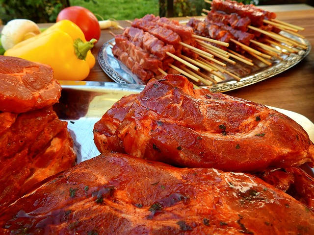
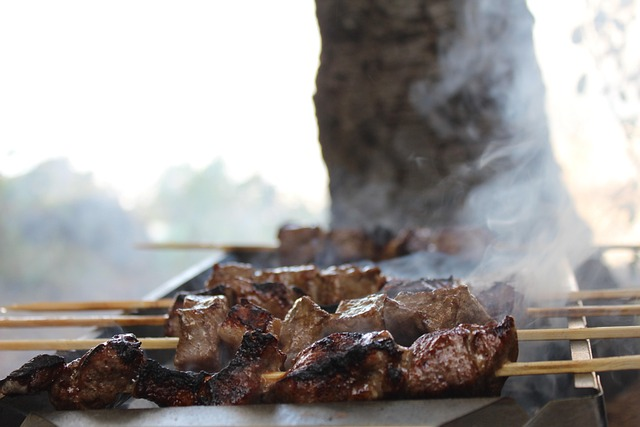

⇤
Beef kebab recipe


Using a beef shish kebabs for freezer cooking recipe like this one is a
great way to cook once a month. Yummy on the grill.
Ingredients
- 500gr of beef good beef cut
- 1 teaspoon hot chile paste
- 1-inch red onion
- 1 red bell pepper, cut into 1-inch pieces
- 1 teaspoon salt
Directions
-
Place zucchini, bell pepper, and pineapple in a large bowl. Drizzle with
oil; toss to coat. Portion mixture among plastic resealable freezer
bags.
-
Whisk ketchup, water, steak sauce, sugar, vinegar, and Worcestershire
sauce together in a separate bowl. Add beef cubes; toss to coat. Divide
beef mixture among bags, squeeze out excess air, and seal the bags;
freeze.
-
Thaw desired portion(s) in refrigerator before cooking, 8 hours to
overnight. Meanwhile, soak skewers in warm water, 30 minutes to
overnight.
-
Preheat an outdoor grill for medium heat and lightly oil the grate.
-
Remove beef, vegetables, and pineapple from marinade and shake off
excess. Discard marinade. Alternate beef, vegetables, and pineapple onto
skewers.
-
Cook on the preheated grill, flipping occasionally, until cooked to your
liking, about 10 minutes total for medium-rare.
Go home